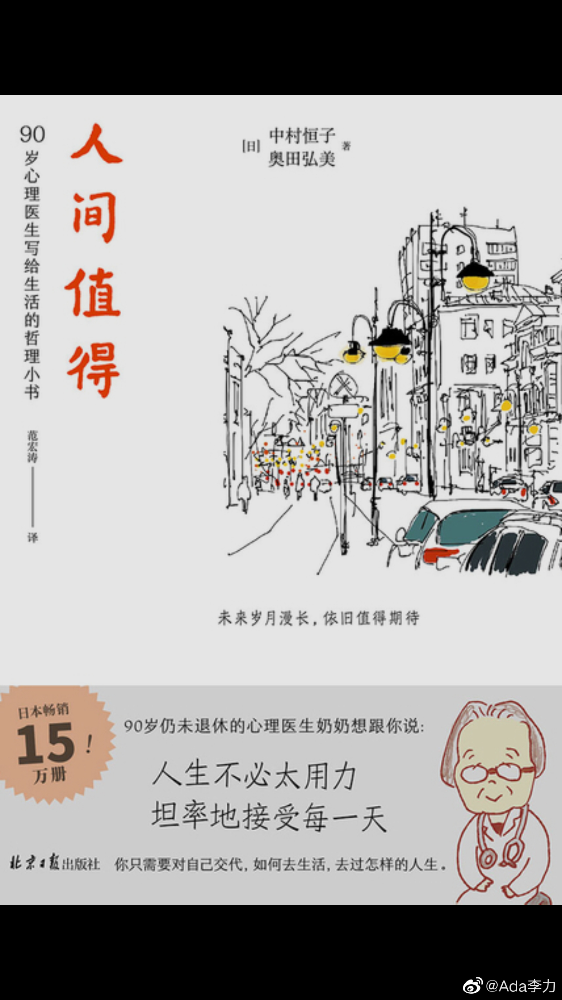

#不明所以#
最近看书更喜欢看一些老年人写的人生感悟，在这个年龄阶段已经不会再去粉饰什么，而会真实的分享一些自己对过往的看法以及一些经验。
《人间值得》这本书的内容看起来倒跟书名不是很符合，没那么积极，因为对作者来说人间无所谓值得不值得，她就是来人间走了一趟而已。
作者中村恒子90岁时，已经工作了70年，从事的是做心理医生的专业工作。但她讲工作也并不是他所热爱的事情，一辈子只是每天努力的生活，拼命做好眼前的工作，至于其他名利享受之类，完全没有时间考虑。
这样的一辈子，我真看不出来有什么让我值得可以参考的。
作者喜欢强调的是，孤独是一件好事儿，从根本上讲，人的一生其实是一个人独自生活，所以她在工作中间从来不对别人做过高期望，但也不和别人发生太多的纠葛。她认为这是维系和谐关系的关键。即使是和大儿子居住在一个小区内，以她这样的高龄，也基本上保持一个独居的生活。连后事也是交代给每天来接送他的司机，叮嘱司机，如果她好几天没出来的话，有可能就死掉了，可以打电话给她的儿子。
而且有意思的是，作为医生，她并不希望自己昏倒在地上的时候，还被抢救回来。她对儿子说，如果发现她躺倒在地上，就让她那么继续躺一会儿，要等到不能再抢救活过来的时候，再去打医院的救护电话。
真是活得相当冷静和冷酷的一个老太太呢。
最近看书更喜欢看一些老年人写的人生感悟，在这个年龄阶段已经不会再去粉饰什么，而会真实的分享一些自己对过往的看法以及一些经验。
《人间值得》这本书的内容看起来倒跟书名不是很符合，没那么积极，因为对作者来说人间无所谓值得不值得，她就是来人间走了一趟而已。
作者中村恒子90岁时，已经工作了70年，从事的是做心理医生的专业工作。但她讲工作也并不是他所热爱的事情，一辈子只是每天努力的生活，拼命做好眼前的工作，至于其他名利享受之类，完全没有时间考虑。
这样的一辈子，我真看不出来有什么让我值得可以参考的。
作者喜欢强调的是，孤独是一件好事儿，从根本上讲，人的一生其实是一个人独自生活，所以她在工作中间从来不对别人做过高期望，但也不和别人发生太多的纠葛。她认为这是维系和谐关系的关键。即使是和大儿子居住在一个小区内，以她这样的高龄，也基本上保持一个独居的生活。连后事也是交代给每天来接送他的司机，叮嘱司机，如果她好几天没出来的话，有可能就死掉了，可以打电话给她的儿子。
而且有意思的是，作为医生，她并不希望自己昏倒在地上的时候，还被抢救回来。她对儿子说，如果发现她躺倒在地上，就让她那么继续躺一会儿，要等到不能再抢救活过来的时候，再去打医院的救护电话。
真是活得相当冷静和冷酷的一个老太太呢。
- 